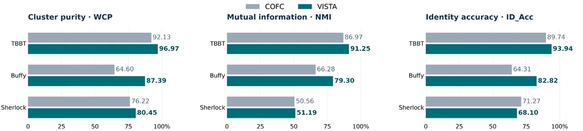
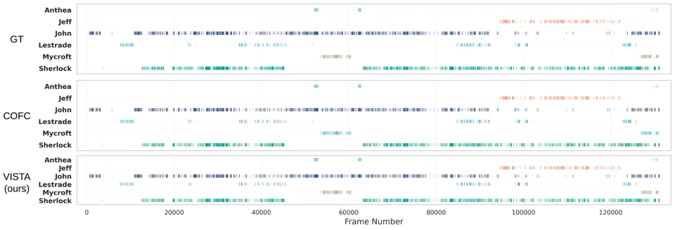
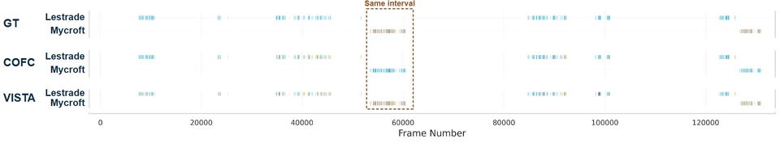
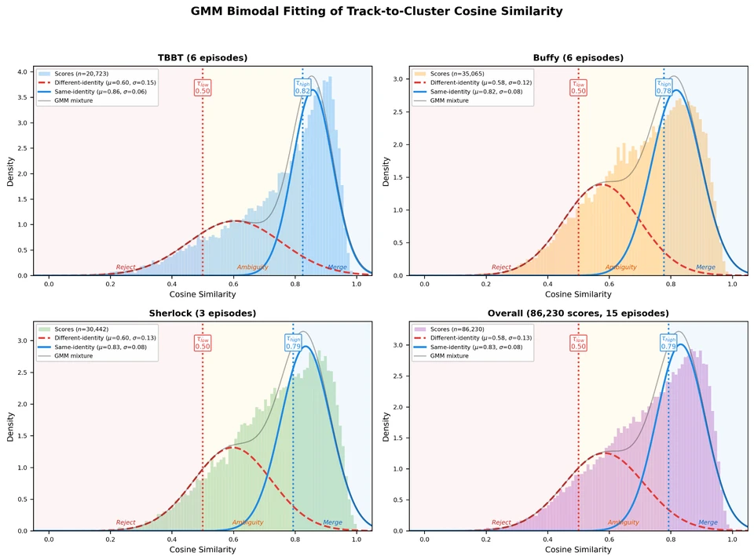

ACM MULTIMEDIA · 2026
VISTA
Vision-Language Integrated Semantic Triage Architecture for Online Face Clustering in Long Videos
VISTA combines geometric identity embeddings with symbolic semantic evidence for single-pass face clustering. A three-zone triage policy controls how that evidence is used, rather than treating every attribute prediction as a hard constraint.
Method
The pipeline extracts face embeddings and semantic attributes, forms intra-shot tracks, and then associates tracks across shots. SSR maps noisy labels into stable symbols before semantic arbitration.
Where triage acts: CLIP and DeepFace attributes are extracted up front for every crop. Triage limits semantic arbitration during association; it does not imply that the corresponding feature-extraction forward passes are skipped.

Paper identifier: DOI 10.1145/3767308.3835422. The publication record above is the primary reference; its PDF may be access-restricted.
Results
The controlled comparison uses the same RetinaFace detector, FaceNet embeddings, and evaluation protocol for COFC and VISTA. Across the three datasets and three metrics, VISTA improves eight of the nine comparisons.
Important trade-off: on Sherlock, higher cluster purity comes with lower identification accuracy: 71.27% → 68.10% (−3.17 percentage points). The page preserves this limitation rather than presenting uniform gains.
| Dataset | WCP | NMI | ID_Acc |
|---|---|---|---|
| TBBT | 92.13 → 96.97 | 86.97 → 91.25 | 89.74 → 93.94 |
| Buffy | 64.60 → 87.39 | 66.28 → 79.30 | 64.31 → 82.82 |
| Sherlock | 76.22 → 80.45 | 50.56 → 51.19 | 71.27 → 68.10 |

Qualitative analysis
The supplied timeline views compare the organisation of identity clusters over a complete episode and in a highlighted interval. Cleaner separation between competing identities can coexist with fragmentation of an individual trajectory.


Method notes
A sliding-window Gaussian Mixture Model estimates similarity boundaries online. Persistent and transient cues are treated differently, with temporal voting and reliability-aware attenuation.
The reported clustering-stage throughput must be distinguished from the full pipeline: the paper reports approximately 1,800–2,300 FPS for clustering versus 7–8 FPS end to end. Detection and feature extraction dominate runtime.
Inspect the original GMM diagnostic figure
